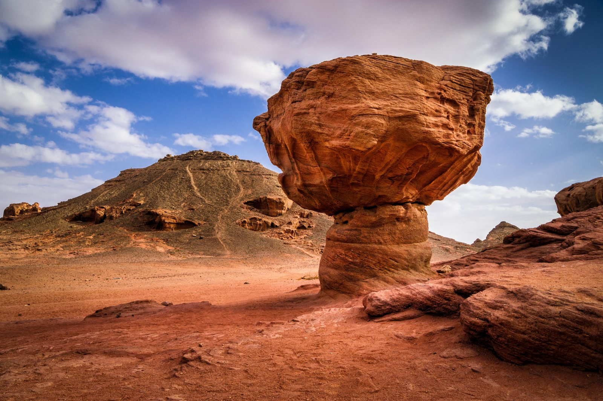
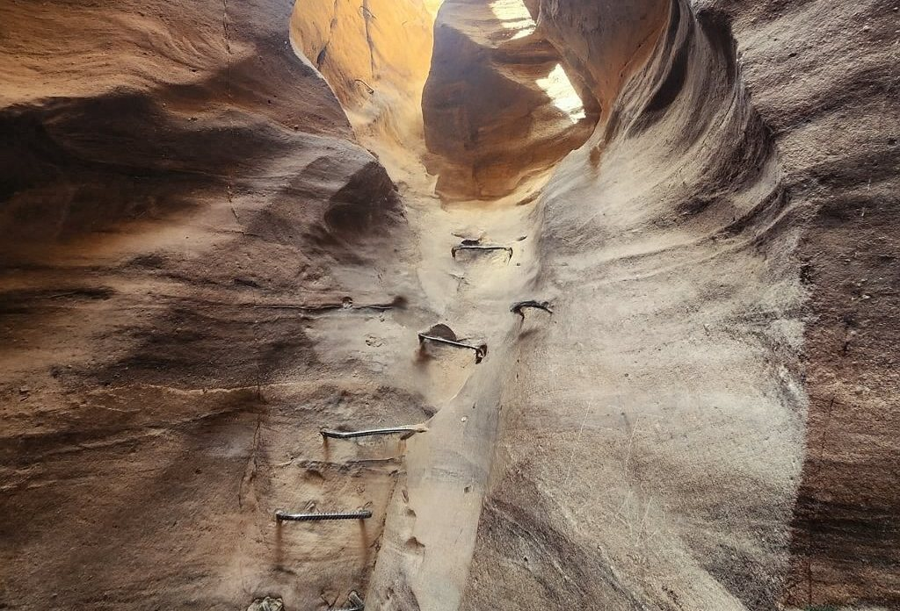
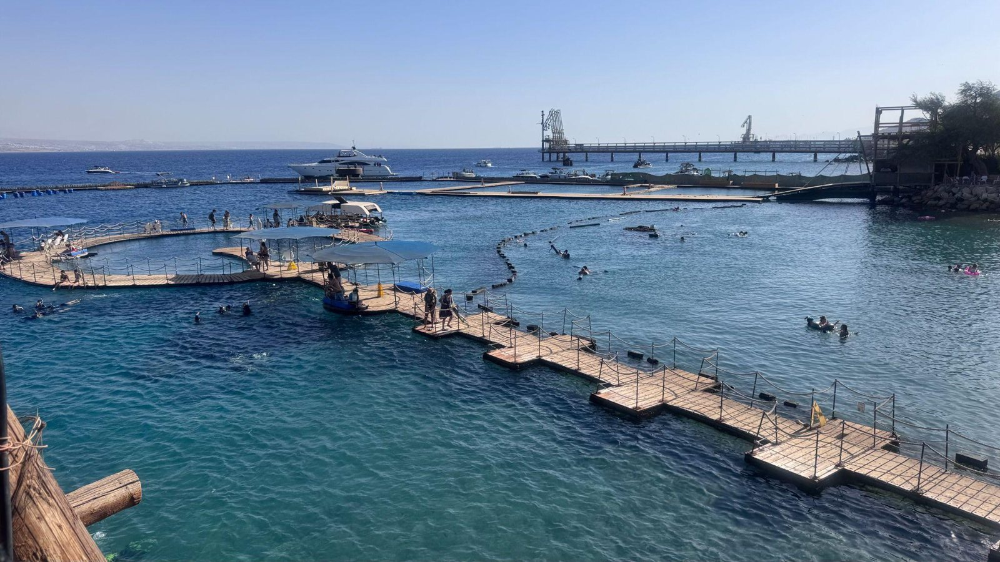

המצפה התת־ימי · מצגת התמונות הרשמית · צילום: ד"ר אבישי טייכר, מתוך אתר פיקיוויקי
המצפה התת־ימי · מצגת התמונות הרשמית · צילום: ד"ר אבישי טייכר, מתוך אתר פיקיוויקי
חבל הנגב, הערבה ואילת · נושא 5
תעופה, גבולות ושיווק
איך מגיעים לאילת, איך הסכמי תעופה שינו את התיירות, ואיך משווקים עיר נופש שרחוקה מהמרכז ומתחרה בשכנות זולות.
נגישות
רחוק מהמרכז
- המרחק הוא אתגר: סיור רגולרי לאילת עובר דרך הנגב בלי להכיר אותו, והמסלול הקלאסי בדרך כלל לא כולל את אילת.
- שדה בתוך העיר: שדה התעופה של אילת היה בתוך העיר, ליד המלונות, והיה מפגע סביבתי. במקומו נבנה נמל רמון, ליד תמנע.הרחבה
- עובדה: לפי הספר, טיסות שכר מאירופה נחתו בעובדה.
- ארקיע וטיסות הפנים: חבילות של 3 ימים באמצע השבוע, סופי שבוע, חבילות עם ישרוטל, וסיורים לפטרה, לסיני ולקהיר.

נמל תעופה בדרום
מה תורם נמל תעופה חדש
פיזור התנועה
יותר שדות תעופה, באזורים שונים.
תיירות באזורים רחוקים
מביא מטיילים ומפתח שירותי תיירות.
כלכלה
מפתח מסחר ותעשייה, ומגדיל תעסוקה.
וגם מעודד פיזור אוכלוסייה (מחוון 2019).
מדיניות תעופה
שמיים מוגבלים ושמיים פתוחים
שמיים מוגבלים
זכויות יתר לחברת התעופה המקומית: לפחות מחצית מהתנועה האווירית שייכת לה. דוגמה: לפני השמיים הפתוחים, רוב הטיסות מישראל היו של אל על.
שמיים פתוחים
הסכם בין שתי מדינות או יותר, שמאפשר לחברות של כל אחת לטוס לשטח האחרת בלי הגבלה של תדירות, סוג מטוס או מחיר. לישראל יש הסכם כזה עם האיחוד האירופי.
העקרונות של שמיים פתוחים (מחוון 2021)
קיבולת ותדירות בלי הגבלה · ביטול הגבלות · CODE SHARING · מחירים בלי אפליה.
CODE SHARING: קוד הטיסה של חברה אחת תקף גם בטיסה של חברה אחרת. למשל, כרטיס של אל על למדריד בטיסה של איבריה.
מדיניות תעופה
הסכמים בילטרליים ומה השתנה
הסכמים בילטרליים
הסכמי הדדיות בין שתי מדינות ריבוניות, שמחייבים את שתיהן. הם אלה שאפשרו את מדיניות השמיים הפתוחים. למשל: ההסכם בין ישראל לאיחוד האירופי.
מה השתנה אחרי השמיים הפתוחים
- יותר תיירים נכנסים ויוצאים.
- יותר תחרות ויותר גיוון.
- מחירים נמוכים יותר ושירות טוב יותר.
- נתח השוק של אל על, ארקיע וישראייר קטן. החברות הישראליות צריכות להתחרות במחיר ובשירות מול חברות זרות.
בגרות 2024: הסכמי שמיים פתוחים, שני יתרונות, וההשפעה על נתח השוק של החברות הישראליות.
עצירה לתרגול · עונים בסטודיו
תרגול: שאלות 1–3
מושגים · עונים בסטודיו
שאלות 4–6: מושגים
גבולות
מעברי הגבול וטיולים חוצי גבולות
| מעבר | מדינה | לאן |
|---|---|---|
| מעבר טאבה | מצרים | סיני, קהיר |
| מעבר ערבה (יצחק רבין) | ירדן | עקבה, פטרה |
אילת גובלת במצרים ובירדן. מאילת יוצאות חבילות לפטרה, לסיני ולקהיר. בעבר אפשר היה לקבל ויזה לירדן במעבר עצמו.
מצב הביטחון והמעברים משתנה. כדאי לבדוק מה המצב היום.הרחבה

שיווק
המתחרות, ולמה אילת יקרה
המתחרות
- מצרים: שארם א־שייח', הורגדה, טאבה
- ירדן: עקבה
- טורקיה, יוון וקפריסין
למה אילת יקרה
הטיסה מברלין לאילת ולאיים הקנריים דומה במחיר, אבל שירותי הקרקע בישראל יקרים יותר. שכר העבודה בישראל גבוה (בטאבה הוא נמוך), וגם כשרות, אבטחה ויוקר מחיה. משווים רק בתנאים זהים.
בגרות 2023: שתי מדינות שאילת מתחרה בהן, ולמה המחירים בישראל גבוהים יותר.
שיווק
אילת "בלי ישראל", ומיתוג
למה משווקים את אילת כיעד נפרד
בזמני מתיחות, התדמית של ישראל נתפסת כמסוכנת, ותיירים נמנעים מלבוא. אם מציגים את אילת כיעד נופש נפרד, המצב הגיאופוליטי משפיע פחות על ההחלטה. לפי מחוון 2023, גם בגלל אנטישמיות בעולם.
מיתוג
מותג = מוצר + תג: סמל, שם או רעיון שמזהה מוצר ומבדיל אותו ממתחרים.הרחבה אילת ממתגת את עצמה כעיר הספורט של ישראל, למשל דרך טריאתלון ותחרויות ספורט ימי.

בגרות 2016, 2023: למה משווקים את אילת כיעד מנותק מישראל. בגרות 2023: מותג ומיתוג אילת.
עצירה לתרגול · עונים בסטודיו
תרגול: שאלות 7–8
שאלות מבגרויות · עונים בסטודיו
שאלות 9–11
שאלות מבגרויות · עונים בסטודיו
שאלות 12–14
לסיום
מה לוקחים מהנושא
- המרחק מהמרכז, השדה שהיה בתוך העיר, נמל רמון, ארקיע.
- שמיים מוגבלים מול שמיים פתוחים, CODE SHARING, הסכמים בילטרליים.
- נמל תעופה בדרום: פיזור, תיירות, תעסוקה.
- טאבה (מצרים) וערבה (ירדן): פטרה, סיני, קהיר.
- תחרות ומחירים, אילת "בלי ישראל", ועיר הספורט.
סיימנו את חבל הנגב, הערבה ואילת.